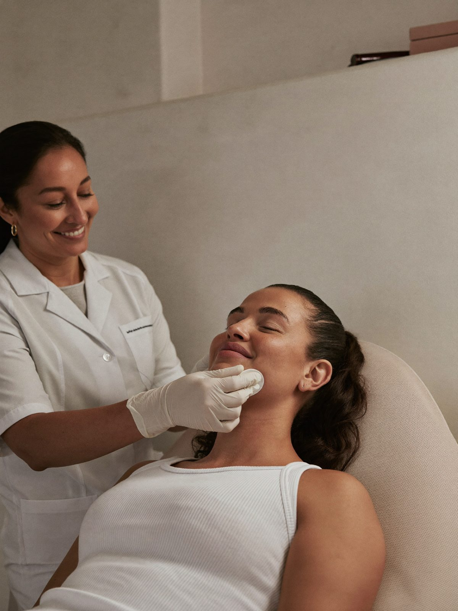
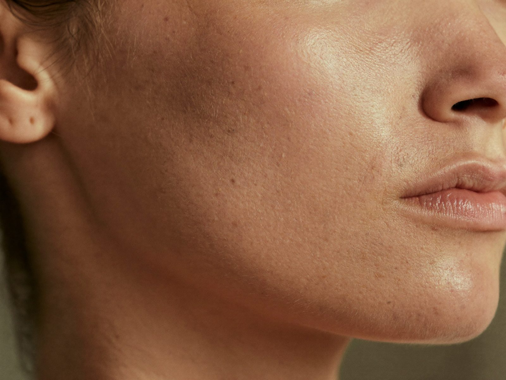

Qué es
Una limpieza profunda hecha con criterio médico: extracción cuidadosa, exfoliación, activos según tu piel e hidratación. Es ideal para empezar, para mantener y para preparar otros tratamientos.
Duración
60 minutos
Sesiones
Cada 4–6 semanas
Recuperación
Vuelves a tu día de inmediato
Los tiempos son orientativos. En tu valoración te decimos qué aplica a tu caso.
Para quién
¿Es para ti?
Evaluamos antes de recomendar.
En detalle
¿Qué incluye la limpieza facial?
- Revisión de tu piel para elegir los productos.
- Limpieza y exfoliación.
- Extracción cuidadosa de puntos negros y poros obstruidos.
- Activos según lo que tu piel necesita.
- Hidratación para cerrar.
Son unos 60 minutos y vuelves a tu día de inmediato.
Limpieza médica o limpieza de spa
Las dos pueden sentirse bien. La diferencia es el criterio: la nuestra la hace personal entrenado bajo supervisión médica, se ajusta a tu diagnóstico y, si hay acné activo, te orientamos también con el manejo médico.
Además es un buen punto de partida para preparar la piel antes de otros tratamientos.
Preguntas frecuentes
Lo que suelen preguntarnos.
¿En qué se diferencia de una limpieza en spa?+
La hace personal entrenado bajo supervisión médica y se ajusta a tu diagnóstico de piel.
¿Sirve si tengo acné?+
Sí, adaptada. Si el acné es activo, también te orientamos con el manejo médico.
¿Queda la piel roja?+
Puede quedar un rubor leve por unas horas.
¿Cada cuánto debo hacerme una limpieza facial?+
Cada 4 a 6 semanas como mantenimiento. Si tu piel es grasa o tiene tendencia al acné, puede ser con más frecuencia; te lo decimos según tu piel.
¿Cuánto vale una limpieza facial en Pereira?+
Te damos el valor al agendar. Incluye la revisión de tu piel y los activos que elegimos para ti.
También te puede interesar
Toxina botulínica
Relaja las líneas de expresión sin quitarte la expresión.
20–30 minSin incapacidadVer tratamiento →Volumen y contornoÁcido hialurónico
Volumen y soporte donde tu rostro los fue perdiendo.
30–45 minDura 9–18 mesesVer tratamiento →Firmeza y colágenoBioestimuladores de colágeno
Tu piel vuelve a producir lo que necesita.
1–3 sesionesCambio progresivoVer tratamiento →

Valoración médica
Conversemos sobre lo que quieres cuidar.
Primero te escuchamos. Luego recomendamos.